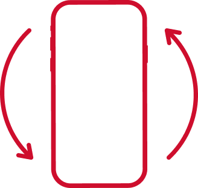

For the best experience, please rotate your phone vertically.

How to Play?
These artworks are part of Jaafar's first batik painting series, titled Wandering Series. Try to spot the odd one out! The odd card will be shuffled around, try your best to follow the card and spot it!
game instructions
Fortune Teller
Jaafar Latiff
Fortune Teller is an example of Jaafar's early experimentations in the batik medium from the late 1960s. The highly stylised figure signals a shift from the artist's prior disposition for figurative works.
Wandering Series 19/76
Jaafar Latiff
Wandering Series is Jaafar's first batik painting series. The shapes in this work suggest the tails of a kite undulating in the breeze or petals of a flower in full bloom.
Wandering Series 8/79
Jaafar Latiff
Batik is an unforgiving medium and colouring needs to progress from light to dark areas. Jaafar had to begin with the final composition already in mind. Lighter colours are applied first and protected by wax, while darker colours are produced through an accumulation of wash applications or dye baths.